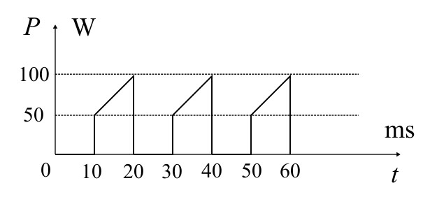

Soveltavissa tehtävissä yhdistellään eri lukiokurssien aiheita. Eräs perinteinen yhdistelmä on esimerkiksi lämpö-ja sähköoppi. Tehtävissä saatetaan antaa myös tehtäväkohtaisia kaavoja, jotka ovat lukio oppimäärän ulkopuolista tietoa. Tehtävissä saa käyttää valitsemaasi kaavakokoelmaa (esim. MAOL) ja trigonometrista taulukkoa.
Tarkastellaan kahta identtistä \(m\) massaista palloa \(A\) ja \(B\). Pallo \(A\) liikkuu nopeudella \(v_A\) samaan suuntaan kuin pallo \(B\), joka liikkuu nopeudella \(v_B\). Ennen pallojen törmäystä pallo \(A\) kulkee edellä. Pallojen törmättyä ne takertuvat yhteen. Kuinka paljon pallojen lämpötila kasvaa välittömästi törmäyksen jälkeen, kun kummankin pallon ominaislämpökapasiteetti on \(c\)?
Putkessa oleva elohopea on paikallaan, tällöin putkeen jäävään elohopea patsaaseen vaikuttaa painovoima \(G\), ulkoisen ilmanpaine aiheuttama voima \(F_0\), mutta myös putken sisäinen ilmanpaine \(F_i\), joka syntyy noston yhteydessä. Newtonin II lain avulla saadaan:
\begin{equation*}
\begin{split}
\sum \overline{F} &= \overline{0} \\
\overline{G}+\overline{F}_0+\overline{F}_i = \overline{0} \\
\end{split}
\end{equation*}
Valitaan positiivinen suunta alaspäin, jolloin:
\begin{equation*}
\begin{split}
G-F_0+F_i &= \\
mg +F_i &= F_0 \\
\end{split}
\end{equation*}
Olkoon elohopea patsaan poikkipinta-ala \(A\), tällöin paineiden aiheuttama voima voidaan kirjoittaa muodossa:
\begin{equation*}
\begin{split}
mg+p_iA &= p_0A \\
\end{split}
\end{equation*}
Toisaalta patsaan massa voidaan kirjoittaa tiheyden avulla: (patsas on olennaisesti sylinterin muotoinen!)
\begin{equation*}
\begin{split}
\rho &= \frac{m}{V} \\
m &= \rho V \\
m &= \rho Ah
\end{split}
\end{equation*}
Sijoittamalla aiempaan yhtälöön saadaan:
\begin{equation*}
\begin{split}
\rho Ahg+p_iA &= p_0A \\
\rho hg+p_i &= p_0 \\
\end{split}
\end{equation*}
Toisaalta, kun sylinteriä nostetaan ylöspäin sen sisälle jäävä kaasu laajenee vakiolämpötilassa. Boylen laista saadaan:
\begin{equation*}
\begin{split}
p_0V_0 &= p_iV_f\\
p_0A\frac{\ell}{2} &= p_i A(\ell-h) \\
p_0\frac{\ell}{2} &= p_i(\ell-h) \\
p_i &= p_0\frac{\ell}{2(\ell-x)}
\end{split}
\end{equation*}
Sijoitetaan aiempaan yhtälöön:
\begin{equation*}
\begin{split}
\rho hg+p_0\frac{\ell}{2(\ell-x)} &= p_0 \\
2\rho gh^2 -2(p_0-\ell \rho g)h+p_0\ell &= 0
\end{split}
\end{equation*}
Yhtälö saadaan ratkaistua toisen asteen yhtälön ratkaisukaavaa käyttämällä:
\begin{equation*}
\begin{split}
h &= \frac{-( -2(p_0+\ell \rho g)) \pm \sqrt{( -2(p_0+\ell \rho g))^2-4\cdot 2\rho g\cdot p_0\ell}}{2\cdot2\rho g} \\
h &= \frac{2(p_0+\ell \rho g) \pm \sqrt{ 4(p_0+\ell \rho g)^2-8 \rho g p_0\ell}}{4\rho g} \\
\end{split}
\end{equation*}
Sijoitetaan lukuarvot (tehdään ilman yksiköitä selvyyden vuoksi, pyörittelyssä tulee käyttää kymmenpotensseja hyväksi, varsinkin nelilaskimella.):
\begin{equation*}
\begin{split}
h &= \frac{2(101325+1\cdot 13{,}6\cdot10^3 \cdot 9{,}81) \pm \sqrt{ 4(101325+1{,}0\cdot 13{,}6\cdot10^3\cdot 9,81)^2-8\cdot13{,}6\cdot10^3 \cdots}}{4\cdot 13{,}6\cdot10^3\cdot 9{,}81} \\
h&= \frac{469482\pm\sqrt{1{,}1226\cdot10^{11}}}{533664}\\
h&= \frac{469482\pm\sqrt{1{,}1226\cdot10^{10}\cdot 10}}{533664}\\
h&= \frac{469482\pm10^5\cdot\sqrt{10}\sqrt{1{,}1226}}{533664}
\end{split}
\end{equation*}
Annetusta taulukosta saadaan likiarvot neliöjuurille:
\begin{equation*}
\begin{split}
h \approx \frac{469482\pm10^5\cdot3,16\cdot1,05}{533664}
\end{split}
\end{equation*}
Yhtälön ratkaisut ovat siis \(h = 1{,}501\) tai \(h=0{,}2579\). Ensimmäinen ratkaisu \(h=1,501>\ell\), eli se ei ole mahdollinen. Elohopea patsaan korkeus siis \(h\approx 0{,}26 \,\mathrm{m}\).
Sentrifugi on laite, jolla nestepitoisesta seoksesta saadaan eroteltua eri aineosaiset kappaleet toisistaan mikäli niillä on eroava tiheys. Erottelua voidaan myös teoriassa tehdä ilman sentrifugia, koska saostumaan kohdistuu maapallon vetotoima. Tämä prosessi on hyvin hidas sentrifugiin verrattuna. Tarkastellaan tilannetta, jossa \(d\) paksuisessa koeputkessa on saostuma, jonka tiheys on \(\rho_s\). Saostumaa ympäröivällä nesteellä on tiheys \(\rho_n\). Sentrifugilla, jonka pyörimissäde \(R=25\,\mathrm{cm}\) aletaan pyörittämään koeputkea \(16000 \,\mathrm{rpm}\) kulmanopeudella, jolloin kappale alkaa liikkumaan putkessa. Kappaleen liikkuessa putkessa nestettä vastaan siihen kohdistuu nesteen aiheuttama vastusvoima:
\begin{equation*}
F_D = bv
\end{equation*}
jossa \(b\) on kokeellinen vakio ja \(v\) on saostuman nopeus. Mikä on nopeussuhteen \(\frac{v_2}{v_1}\) suuruus, jos \(v_2\) on saostuman nopeus sentrifugissa ja \(v_1\) saostuman nopeus telineessä olettaen, että nopeus on hetkellisestä vakio tarkasteluhetkellä.
Ratkaistaan ensin koeputken nopeus, kun se on telineessä (ei vielä sentrifugissa). Newtonin II lain mukaan:
\begin{equation*}
\begin{split}
\sum \overline{F} &= \overline{0} \\
\overline{G}+\overline{N}+\overline{F}_D &= \overline{0}
\end{split}
\end{equation*}
Valitaan positiivinen suunta ylöspäin:
\begin{equation*}
\begin{split}
-G+N+F_D &= 0 \\
N+bv_1 &= mg \\
\end{split}
\end{equation*}
Toisaalta jos saostuman tilavuus on niin sen massalle voidaan kirjoittaa:
\begin{equation*}
\rho_s = \frac{m}{V} \Rightarrow m = \rho_s V
\end{equation*}
Arkhimedeen lain mukaan kappaleeseen kohdistuva noste on yhtä suuri kun kappaleen syrjäyttämän nestemäärän paino:
\begin{equation*}
N = m_{neste}g = \rho_n gV
\end{equation*}
Sijoittamalla tiedot aikaisempaan yhtälöön saadaan:
\begin{equation*}
\begin{split}
\rho_n gV+bv_1 &= \rho_s g V \\
bv_1 &= \rho_s gV-\rho_n gV \\
v_1 &= \frac{Vg(\rho_s-\rho_n)}{b}
\end{split}
\end{equation*}
Tarkastellaan nyt tilannetta, jossa koeputki on sentrifugissa. Kappale on ympyräliikkeessä, jolloin Newtonin II mukaan:
\begin{equation*}
\begin{split}
\sum \overline{F} &= m\overline{a}_n \\
\overline{N}+\overline{F}_D &= m\overline{a}_n \\
N+F_D &= ma_n\\
\rho_n a_{n}V+bv_2 &= \rho_sV\omega^2 R \\
\rho_n\omega^2 R V+bv_2 &= \rho_sV\omega^2 R \\
v_2 &= \frac{V\omega^2R(\rho_s-\rho_n)}{b} \\
\end{split}
\end{equation*}
Toisaalta, koska koeputkella on paksuus \(d\), niin sentrifugin pyörimissäteestä tulee vähentää \(d\), eli:
\begin{equation*}
R = R_{sentrifugi}-d = 25\,\mathrm{cm}-2{,}5\,\mathrm{mm} = 24{,}75\,\mathrm{cm}
\end{equation*}
Lasketaan nyt kysytty nopeussuhde:
\begin{equation*}
\begin{split}
\frac{v_2}{v_1} &= \frac{\frac{V\omega^2R(\rho_s-\rho_n)}{b}}{\frac{Vg(\rho_s-\rho_n)}{b}} \\
\frac{v_2}{v_1} &= \frac{V\omega^2R(\rho_s-\rho_n)}{b}\cdot \left(\frac{Vg(\rho_s-\rho_n)}{b}\right)^{-1} \\
\frac{v_2}{v_1} &= \frac{\omega^2 R}{g} \\
\frac{v_2}{v_1} &= \frac{\left(16000\cdot \frac{2\pi}{60\,\mathrm{s}} \right)^2\cdot 24{,}75\cdot10^{-2}\,\mathrm{m}}{9{,}81\,\mathrm{\frac{m}{s^2}}} \\
\frac{v_2}{v_1} &= 70827{,}62 \\
\frac{v_2}{v_1} &\approx 71000
\end{split}
\end{equation*}
Kappaleen nopeus sentrifugissa on siis 71 tuhatta kertaa suurempi kuin telineessä.
Laboratoriossa tarkastellaan kahta polystyreenipalloa \(A\) ja \(B\), jotka ovat kiinnitetty massattomalla langalla kattoon kauas toisistaan. Pallon \(A\) massa on \(m_A\) and pallon \(B\) massa \(m_B\). Kumpaankin palloon siirretään \(Q\) verran energiaa, jolloin pallon \(A\) energia muuttuu \(E_A\) verran ja pallon \(B\) \(E_B\) verran lämpölaajenemisen takia. Kuinka suuri on suhde \(\frac{E_B}{E_A}\)?
Ratkaistaan pallon säteelle lauseke tiheyden avulla alkutilanteessa:
\begin{equation*}
\begin{split}
\rho &= \frac{m}{V_{pallo}} \\
\rho V_{pallo} &= m \\
\rho \frac{4}{3}\pi r_0^3 &= m \\
r_0^3 &= \frac{3m}{4\rho} \\
r_0 &= \sqrt[3]{ \frac{3m}{4\rho}} \\
\end{split}
\end{equation*}
Toisaalta kumpaankin palloon tuodaan \(Q\) verran energiaa, jolloin niiden lämpötila nousee \(\Delta T \) verran:
\begin{equation*}
Q = cm\Delta T \Rightarrow \Delta T = \frac{Q}{cm}
\end{equation*}
Lämpötilan nousun takia pallojen säde kasvaa:
\begin{equation*}
\Delta r = r_0\alpha\Delta T
\end{equation*}
Säteen kasvun takia myös pallon massakeskipiste muuttuu. Alkutilanteessa pallo oli \(r_0\) etäisyydellä langan toisesta päästä, mutta nyt ne ovat \(r_0+\Delta r\) etäisyydellä. Tämä johtaa siihen, että pallon potentiaalienergia pienenee massakeskipisteen painuessa alaspäin:
\begin{equation*}
\Delta E_{pot} = mg\Delta r = mgr_0\alpha\Delta T=mg\alpha\cdot \frac{Q}{cm}\cdot \sqrt[3]{ \frac{3m}{4\rho}} = \frac{\alpha Qg}{c}\cdot \sqrt[3]{ \frac{3m}{4\rho}}
\end{equation*}
Eli palloille \(A\) ja \(B\) muutos:
\begin{equation*}
\begin{split}
E_A &= \frac{\alpha Qg}{c}\cdot \sqrt[3]{ \frac{3m_A}{4\rho}} \\
E_B &= \frac{\alpha Qg}{c}\cdot \sqrt[3]{ \frac{3m_B}{4\rho}} \\
\end{split}
\end{equation*}
Eli suhde:
\begin{equation*}
\begin{split}
\frac{E_A}{E_B} &= \frac{\frac{\alpha Qg}{c}\cdot \sqrt[3]{ \frac{3m_A}{4\rho}}}{\frac{\alpha Qg}{c}\cdot \sqrt[3]{ \frac{3m_B}{4\rho}}} \\
\frac{E_A}{E_B} &= \frac{\sqrt[3]{ \frac{3m_A}{4\rho}}}{\sqrt[3]{ \frac{3m_B}{4\rho}}} \\
\frac{E_A}{E_B} &= \sqrt[3]{\frac{\frac{3m_A}{4\rho}}{\frac{3m_B}{4\rho}}} \\
\frac{E_A}{E_B} &= \sqrt[3]{\frac{m_A}{m_B}} \\
\end{split}
\end{equation*}
Helikopterin toimintaa voidaan mallintaa lämpökoneena. Kaksi tonnia painavan helikopterin moottorin sisäinen lämpötila on \(2000\,\mathrm{^\circ C}\) ja helikopterista poistuvan kaasun lämpötila on \(900\,\mathrm{^\circ C}\). Polttoaineen lämpöarvo on \(47\cdot10^3\,\mathrm{\frac{kJ}{kg}}\) ja tiheys \(0{,}8\,\mathrm{\frac{g}{cm^3}}\). Kuinka korkealle helikopteri voi lentää polttamalla litran polttoainetta?
un polttoainetta poltetaan litra siitä vapautuu energiaa määrä:
\begin{equation*}
Q_H = Hm_{polttoaine} = H\rho V
\end{equation*}
Kaikki tästä energiasta ei kulu lentokoneen potentiaalienergian muuttamiseen. Ratkaistaan moottorin Carnot'n hyötysuhde
\begin{equation*}
\eta = \frac{W}{Q_H} = 1-\frac{T_C}{T_H} \Rightarrow W = Q_H\left(1-\frac{T_C}{T_H}\right)
\end{equation*}
Tehty työ muuttuu helikopterin potentiaalienergiaksi:
\begin{equation*}
\begin{split}
E_{pot} &= W \\
mgh &= Q_H\left(1-\frac{T_C}{T_H}\right) \\
h &= \frac{Q_H\left(1-\frac{T_C}{T_H}\right)}{mg} \\
h &= \frac{H\rho V\left(1-\frac{T_C}{T_H}\right)}{mg} \\
h &= \frac{4{,}7\cdot10^3\cdot10^3\,\mathrm{\frac{J}{kg}}\cdot 0{,}8\,\mathrm{\frac{kg}{l}} \cdot 1\,\mathrm{l}\left(1-\frac{(900+273{,}15\,\mathrm{K})}{(2000+273{,}15\,\mathrm{K})}\right)}{2000\,\mathrm{kg}\cdot 9{,}81\,\mathrm{\frac{m}{s^2}}} \\
h &= 927{,}370\,\mathrm{m}\\
h &\approx 930\,\mathrm{m} \\
\end{split}
\end{equation*}
Hiilidioksidilaseria voidaan käyttää mm. Ihotautien hoidossa. Käsitellään kuvan mukaista \(\mathrm{CO_2}\)-laseria:

Laserilla, jonka aallonpituus \(\lambda = 10{,}6\cdot10^{-6}\,\mathrm{m}\) kohdistetaan kymmenen sekunnin pituisia pulsseja kudokseen. Laserin maksimiteho on \(100\,\mathrm{W}\).
a) Kuinka suuren määrän energiaa laseri siirtää yhdellä pulssilla?
b) Mikä on laserin keskiteho sen jaksonajalla \(T\)?
c) Kuinka monta fotonia on yhdessä pulssissa?
d) Laseria kohdistetaan nyt potilaan iholle. Laseri kohdistuu ympyrälevyn muotoiselle alueelle, jonka säde on noin \(1,5\,\mathrm{cm}\) ja korkeus \(1\,\mathrm{cm}\). Potilaan iho on hoidon alkaessa lämpötilassa \(37\,\mathrm{^\circ C}\). Kuinka monta pulssia voidaan korkeintaan kohdistaa potilaan iholle, jotta sen lämpötila ei nouse yli \(40\%\) sen alkuarvosta. Oletetaan, että kaikki pulssin energia kuluu ihon lämmitykseen. Keskimääräinen ihon tiheys on \(1100\,\mathrm{\frac{kg}{m^3}}\) ja ominaislämpökapasiteetti \(3{,}5\,\mathrm{\frac{kJ}{kg\cdot ^\circ C}}\). Voidaan olettaa, että iho ei jäähdy pulssien välisenä aikana.
a) Teho-aika kuvaajan fysikaalinen pinta-ala on energiaa. Lasketaan siis graafisesti yhden pulssin pinta-ala. Voidaan huomata, että pulssin pinta-ala koostuu neliöstä ja kolmiosta:
\begin{equation*}
\begin{split}
E_{pulssi} &= A_{nelio}+A_{kolmio} \\
E_{pulssi} &= \left(50\,\mathrm{W}\cdot 10\cdot10^{-3}\,\mathrm{s}\right) + \left(\frac{1}{2}\cdot 50\,\mathrm{W}\cdot 10^{-3}\,\mathrm{s}\right) \\
E_{pulssi} &= 0{,}750\,\mathrm{J} \\
\end{split}
\end{equation*}
b) Kuvaajalta voidaan lukea jaksonajaksi \(T\approx 20\,\mathrm{ms}\), jolloin keskiteholle saadaan:
\begin{equation*}
P_k = \frac{\Delta E}{\Delta t} = \frac{E_{pulssi}}{T} = \frac{0{,}750\,\mathrm{J}}{20\cdot10^{-3}\,\mathrm{s}} = 37,5\,\mathrm{W} \approx 38\,\mathrm{W}
\end{equation*}
c) Yhden fotonin energia:
\begin{equation*}
\begin{split}
E_{fotoni} &= hf \\
E_{fotoni} &= \frac{hc}{\lambda} \\
E_{fotoni} &= \frac{6,626070\cdot10^{-34}\,\mathrm{Js}\cdot 2,99792\cdot 10^8\,\mathrm{\frac{m}{s}}}{10{,}6\cdot10^{-6}\,\mathrm{m}} \\
E_{fotoni} &= 1{,}8740\cdot10^{-20}\,\mathrm{J}
\end{split}
\end{equation*}
Eli tarvitaan \(m\) määrä fotoneja tuottamaan yksi pulssi:
\begin{equation*}
m = \frac{E_{pulssi}}{E_{fotoni}} = \frac{ 0{,}750\,\mathrm{J}}{1{,}8740\cdot10^{-20}\,\mathrm{J}} = 4{,}00213\cdot10^{19}\approx 4,0\cdot10^{19}
\end{equation*}
d) Lasketaan potilaan ihon massa tiheyden avulla alueelle johon laser kohdistuu:
\begin{equation*}
\begin{split}
\rho &= \frac{m}{V} \\
m &= \rho V \\
m &= \rho \pi r^2 h\\
\end{split}
\end{equation*}
Koko pulssin energia kuluu ihon lämmittämiseen. Olkoon pulssien määrä \(n\):
\begin{equation*}
\begin{split}
nE_{pulssi} &= Q \\
nE_{pulssi} &= cm\Delta T \\
nE_{pulssi} &= c\rho \pi r^2 h(T_2-T_1) \\
nE_{pulssi} &= c\rho \pi r^2 h(1{,}15T_1-T_1) \\
nE_{pulssi} &= c\rho \pi r^2 h\cdot 0{,}15T_1 \\
n &= \frac{c\rho \pi r^2 h\cdot 0{,}15T_1}{E_{pulssi}} \\
n &= \frac{3{,}5\,\mathrm{\frac{kJ}{kg\cdot K}}\cdot 1100\,\mathrm{\frac{kg}{m^3}} \cdot 3,14159\cdot \left(1{,}5\cdot10^{-2}\,\mathrm{m}\right)^2 \cdot 1\cdot10^{-2}\,\mathrm{m}\cdot 0{,}15\cdot(37+273,15)\,\mathrm{K}}{0{,}750\,\mathrm{J}} \\
n &= 4{,}5015 \\
n&\approx 4 \\
\end{split}
\end{equation*}
Korkeintaan neljä kokonaista pulssia.
Newtonin jäähtymislain avulla voidaan mallintaa lämpimän kappaleen jäähtymistä, kun kappaletta ympäröivä lämpötila säilyy vakiona:
\begin{equation*}
T = T_{ymp} + T_0e^{-kt}
\end{equation*}
jossa \(T_{ymp}\) on ympäristön lämpötila, \(T_0\) tutkittavan kappaleen alkulämpötila, \(k\) ainekohtainen vakio ja \(t\) aika.
Jäähtymislakia voidaan soveltaa kuolinajan selvittämisessä. Rikospaikalta löydetään vainaja, jonka kehon lämpötila on \(27^\circ\mathrm{C}\). Tutkijat huomaavat, että \(30\) minuutin kuluessa lämpötila on laskenut \(3^\circ\mathrm{C}\). Kuinka monta minuuttia sitten vainaja on kuollut, kun voidaan olettaa kehon lämpötilan alussa olevan \(37^\circ\mathrm{C}\) ja ympäristön lämpötilan olevan vakio \(20^\circ\mathrm{C}\). Henkilön menehdyttyä kehon lämpötila alkaa laskemaan noin \(30\) minuutin kuluttua.
Käytä luonnollisen logaritmin arvoille tehtävissä arviota:
\begin{equation*}
\begin{split}
\ln(x) \approx 10x-3{,}3 \quad, 0< x\leq0{,}9
\end{split}
\end{equation*}
Ratkaistaan vakion \(k\) suuruus ensin. Tiedetään, että \(30\) minuutissa lämpötila laskee \(3^\circ C\):
\begin{equation*}
\begin{split}
(27-3)\mathrm{^\circ C} &= 20\mathrm{^\circ C}+37\mathrm{^\circ C}\cdot e^{-k\cdot (30\cdot60)\mathrm{s}} \\
24\mathrm{^\circ C}-20\mathrm{^\circ C} &=37\mathrm{^\circ C}\cdot e^{-k\cdot 180\,\mathrm{s}} \\
0{,}10810 &= e^{-k\cdot 180\,\mathrm{s}} \\
\ln(0{,}10810) &= -k\cdot 180\,\mathrm{s}
\end{split}
\end{equation*}
Tehtävän approksimaatiolla saadaan logaritmille arvo:
\begin{equation*}
\ln(0{,}10810) \approx 10\cdot 0{,}10810-3{,}3 = -2{,}219
\end{equation*}
Jolloin saadaan ratkaistua \(k\):
\begin{equation*}
k \approx -\frac{-2{,}219}{180\,\mathrm{s}} = 0,0123277\,\mathrm{\frac{1}{s}}
\end{equation*}
Ratkaistaan jäähtymislain avulla nyt kuinka monta tuntia on kulunut, kun lämpötila on laskenut ajassa \(t\) arvosta \(37\mathrm{^\circ C}\) arvoon \(27\mathrm{^\circ C}\):
\begin{equation*}
\begin{split}
27\mathrm{^\circ C} &= 20\mathrm{^\circ C}+37\mathrm{^\circ C}\cdot e^{-kt} \\
0{,}18918 &= e^{-kt} \\
\ln(0,18918) &= -kt \\
t &= -\frac{\ln(0{,}18918)}{k}
\end{split}
\end{equation*}
Logaritmille saadaan laskettua:
\begin{equation*}
\ln(0,18918) \approx 10\cdot0{,}18918-3{,}3= -1{,}4082
\end{equation*}
Eli aika:
\begin{equation*}
t = -\frac{-1{,}4082}{0,0123277\,\mathrm{\frac{1}{s}}} = 114{,}2305\,\mathrm{s} = 1{,}90384\,\mathrm{min}
\end{equation*}
Eli henkilö on kuollut noin \(1{,}9+30 = 31{,}9\) minuuttia ennen tutkijoiden saapumista.
Katosta roikkuu ohuen \(4{,}2\,\mathrm{m}\) langan varassa \(10\,\mathrm{kg}\) painava muovipallo, joka voi vapaasti kiertää sen ripustuspisteen ympäri pystysuunnassa. Palloa kohti laukaistaan jousiviritteisellä aseella tikka puristamalla jousta \(0{,}4\,\mathrm{m}\) verran, jonka seurauksena \(5\,\mathrm{kg}\) painoinen tikka törmää palloon ja jää sen sisälle. Kuinka suuri jousen jousivakio tulee vähintään olla, jotta pallo pääsisi kiertämään täyden silmukan?
Merkitään alaindekseille \(t\)-tikka , \(p\)-pallo
Ratkaistaan tikan alkunopeus. Jousen potentiaalienergia muuttuu tikan kineettiseksi energiaksi:
\begin{equation*}
\begin{split}
E_{jousi} &= E_{kin,tikka} \\
\frac{1}{2}kx^2 &= \frac{1}{2}m_tv_0^2 \\
v_0 &= \sqrt{\frac{k}{m_t}}x
\end{split}
\end{equation*}
Tämän jälkeen tikka törmää palloon. Kappaleet tarttuvat yhteen ja kulkee törmäyksen jälkeen samalla nopeudella, jolloin liikemäärän säilymisestä seuraa:
\begin{equation*}
\begin{split}
\overline{p}_1 &= \overline{p}_2 \\
m_{t}\overline{v}_0 &= m_{kok}\overline{v}_2 \\
m_tv_0 &= (m_t+m_p)v_2 \\
v_2 &=\frac{m_tv_0}{m_t+m_p}
\end{split}
\end{equation*}
Toisaalta Newtonin II lain mukaan ympyräliikkeessä:
\begin{equation*}
\begin{split}
\sum \overline{F} &= m_{kok}\overline{a}_n \\
\overline{T}+\overline{G} &= m_{kok}\overline{a}_n \\
\end{split}
\end{equation*}
jotta pallo ja tikka pääsisi juuri ja juuri "silmukan" yli tukivoima menee hetkellisesti nollaan ylimmässä pisteessä:
\begin{equation*}
\begin{split}
\Rightarrow G &= m_{kok}a_n \\
m_{kok}g &= m_{kok}\frac{v_3^2}{R} \\
v_3 &= \sqrt{gR} \\
\end{split}
\end{equation*}
Tarkastellaan tilannetta nyt energian kannalta. Tikalla ja pallolla on vain kineettistä energiaa silmukan alimmassa pisteessä. Ylimmässä pisteessä sillä on potentiaalienergiaa ja kineettistä energiaa:
\begin{equation*}
\begin{split}
E_{kin,1} &= E_{kin,2}+E_{pot} \\
\frac{1}{2}m_{kok}v_2^2 &= \frac{1}{2}m_{kok}v_3^2+m_{kok}g\cdot 2R \\
\left(\frac{m_tv_0}{m_t+m_p}\right)^2 &= gR+4gR \\
\frac{m_t^2v_0^2}{(m_t+m_p)^2} &= 5gR \\
v_0^2 &= \frac{5gR(m_t+m_p)^2}{m_t^2} \\
v_0 &= \sqrt{\frac{5gR(m_t+m_p)^2}{m_t^2}} \\
\end{split}
\end{equation*}
Sijoitetaan alkunopeus jousen puristuman yhtälöön:
\begin{equation*}
\begin{split}
\sqrt{\frac{5gR(m_t+m_p)^2}{m_t^2}} &= \sqrt{\frac{k}{m_t}}x \\
\frac{5gR(m_t+m_p)^2}{m_t^2} &= \frac{k}{m_t}x^2 \\
k &= \frac{5gR(m_t+m_p)^2}{m_tx^2} \\
k &= \frac{5\cdot 9{,}81\,\mathrm{\frac{m}{s^2}}\cdot 4{,}2\,\mathrm{m}\cdot(10\,\mathrm{kg}+5\,\mathrm{kg})^2}{5\,\mathrm{kg}\cdot (0{,4}\,\mathrm{m})^2} \\
k &= 57940{,}31\,\mathrm{\frac{N}{m}} \\
k &\approx 58\,\mathrm{kN} \\
\end{split}
\end{equation*}
Laboratoriossa halutaan selvittää ihmisen reisiluun paksuus kuvan mukaisen tilanteen mukaisesti. Osa kohdistetusta säteilystä kulkee suoraan kudoksen läpi, jolloin läpi tullut intensiteetti on \(I_2\) suuruinen. Osa säteilystä kulkee kudoksen ja reisiluun läpi, jolloin läpi tullut on \(I_1\) suuruinen. Laboratoriossa huomataan, että suoraan kudoksen läpi tullut intensiteetti on kaksi kertaa suurempi kuin luun läpi kulkenut intensiteetti.
Reiden paksuus on \(d\) ja reisiluun paksuus on \(l\). Luun matkanvaimennus kerroin \(\mu_1 = 0{,}58\,\mathrm{\frac{1}{cm}}\) ja Kudoksen matkanvaimennus kerroin \(\mu_2 = 0{,}20\,\mathrm{\frac{1}{cm}}\).
Kirjoitetaan säteilyn heikentymislaki kudoksen läpi mennelle intensiteetille:
\begin{equation*}
I_2 = I_0e^{-\mu_2 d}
\end{equation*}
Kudosta on reisiluussa siis \(d_k = d-l\) matka. Kirjoitetaan heikentymislaki matkalle kun säteily kulkee myös luun kautta:
\begin{equation*}
\begin{split}
I_1 &= I_0e^{\mu_2d_k}e^{\mu_1 l} \\
\end{split}
\end{equation*}
Suoraan kudoksen läpi mennyt intensiteetti \(I_2\) on kaksi kertaa suurempi kuin \(I_1\), siis:
\begin{equation*}
\begin{split}
I_2 &= 2I_1 \\
\frac{I_2}{I_1} &= 7 \\
\frac{I_0e^{-\mu_2 d}}{ I_0e^{-\mu_2d_k}e^{-\mu_1 l}} &= 7 \\
\frac{e^{-\mu_2 d}}{e^{-\mu_2d_k}e^{-\mu_1 l}} &= 7 \\
e^{-\mu_2 d} &= 7 e^{-\mu_2d_k}e^{-\mu_1 l} \\
e^{-\mu_2 d} &= 7e^{-\mu_2d_k-\mu_1 l} \\
e^{-\mu_2 d} &= 7e^{-\mu_2(d-l)-\mu_1 l} \\
e^{-\mu_2 d} &= 7e^{-\mu_2d+\mu_2l-\mu_1 l} \\
e^{-\mu_2 d} &= 7e^{-\mu_2 d}e^{\mu_2l-\mu_1 l} \\
1 &= 7e^{\mu_2l-\mu_1 l} \\
\ln\left(\frac{1}{7}\right) &= l(\mu_2-\mu_1) \\
l &= \frac{\ln\left(\frac{1}{7}\right)}{\mu_2-\mu_1} \\
l &= \frac{\ln(0{,}142)}{0{,}20\,\mathrm{\frac{1}{cm}}-0{,}58\,\mathrm{\frac{1}{cm}}} \\
\end{split}
\end{equation*}
Logaritmin arvo saadaan approksimaation avulla:
\begin{equation*}
\ln{0{,}142} \approx 7{,}14\cdot0{,}142-2{,}96 = -1{,}94
\end{equation*}
Luun paksuus siis:
\begin{equation*}
l \approx \frac{-1{,}94}{0{,}20\,\mathrm{\frac{1}{cm}}-0{,}58\,\mathrm{\frac{1}{cm}}} = 5{,}1052 \,\mathrm{cm}\approx 5{,}1\,\mathrm{cm}
\end{equation*}
Elektroforeesin avulla voidaan erotella erilaisia sähköisesti varautuneita kappaleita asettamalle ne geeliin, johon kytketään homogeeninen sähkökenttä. Sähkökenttä pyrkii siirtämään positiivisia kappaleita katodia kohti ja negatiivista kappaleita anodia kohti. Olettaen, että kappaleet ovat pallon muotoisia niihin kohdistuu Stokesin lain mukainen vastusvoima:
\begin{equation*}
F_d = 6\pi R^2 \eta v
\end{equation*}
jossa \(R\) on kappaleen säde, \(\eta\) välinaineen viskositeetti ja \(v\) nopeus.
Elektroforeesi laitteen levyjen välinen etäisyys on noin \(12{,}4\,\mathrm{cm}\) ja jännite \(25{,}0\,\mathrm{V}\). Muodostuneeseen sähkökenttään asetetaan pallon muotoinen makromolekyyli, jonka halkaisija on \(0{,}0025\,\mathrm{mm}\) ja varaus \(15e\). Kuinka pitkän matkan makromolekyyli on liikkunut \(30\) minuutissa, kun geelin viskositeetti \(5{,}2\,\mathrm{mPas}\)?
Kappaleeseen vaikuttaa sähkökentän aiheuttama voima sekä liikesuuntaan vastaan oleva virtausvastusvoima. Newtonin II lain mukaan:
\begin{equation*}
\begin{split}
\sum \overline{F} &= \overline{0} \\
\overline{F}_E+\overline{F}_d &= \overline{0} \\
F_E-F_d &= 0 \\
QE &= 6\pi R^2\eta v\\
v &= \frac{QE}{6\pi R^2\eta}
\end{split}
\end{equation*}
Toisaalta sähkökenttä on homogeeninen, jolloin:
\begin{equation*}
E = \frac{U}{d}
\end{equation*}
Nopeus \(v\) (ajautumisnopeus) on vakio. Tasaisessa liikkeessä:
\begin{equation*}
\begin{split}
s &= vt \\
s &= \frac{QU}{6\pi R^2\eta d}t\\
s &= \frac{15\cdot1{,}602\cdot10^{-19}\,\mathrm{C}\cdot 25{,}0\,\mathrm{V}}{6\cdot 3{,}14159\cdot (\frac{0{,}0025\cdot10^{-3}\,\mathrm{m}}{2})^2\cdot 5{,}2\cdot 10^{-3}\,\mathrm{Pas}}\cdot (15\cdot 60\,\mathrm{s})\\
s &= 0{,}23535\,\mathrm{m} \\
s &\approx 23{,}5\,\mathrm{cm} \\
\end{split}
\end{equation*}
Larmorin kaavan mukaan varautuneiden kappaleiden kiihtyessä ne säteilee pois energiaa sähkömagneettisena säteilyn muodossa teholla
\begin{equation*}
P = \frac{\mu_0 q^2 a^2}{6\pi c}
\end{equation*}
jossa \(\mu_0\) on tyhjiön permittiivisyys, \(q\) varaus, \(a\) kiihtyvyys ja \(c\) valonnopeus.
Elektroni pudotetaan laboratoriossa levosta, jolloin se putoaa maapallon gravitaatiokentässä. Kuinka suuri on potentiaalienergian muutoksen ja säteilyenergian suhde, kun kappale on pudonnut matkan \(\Delta y\)?
Kappaletta kiihdyttää alaspäin painovoima, jolloin kiihtyvyys \(a\) on putoamiskiihtyvyys \(a=g\). Ratkaistaan kuinka kauan elektronilla kestää pudota matka \(\Delta y\):
\begin{equation*}
\Delta y = v_0t+\frac{1}{2}gt^2 \Rightarrow t = \sqrt{\frac{2\Delta y}{g}}
\end{equation*}
Toisaalta, koska elektroni putoaa matkan \(\Delta y\) sen potentiaalienergia pienenee:
\begin{equation*}
\Delta E_{pot} = mg\Delta y
\end{equation*}
Ratkaistaan säteilyenergian määrä tehon avulla:
\begin{equation*}
P = \frac{E_s}{t} \Rightarrow E_s=Pt = \frac{\mu_0 q^2 g^2}{6\pi c}\cdot \sqrt{\frac{2\Delta y}{g}}
\end{equation*}
Jolloin potentiaalienergian muutoksen ja säteilyssä kadonneen energian suhde:
\begin{equation*}
\begin{split}
\frac{E_s}{\Delta E_{pot}} &= \frac{\frac{\mu_0 q^2 g^2}{6\pi c}\cdot \sqrt{\frac{2\Delta y}{g}}}{mg\Delta y} \\
\frac{E_s}{\Delta E_{pot}} &= \frac{\mu_0 q^2}{6\pi cm}\sqrt{\frac{2g}{\Delta y}} \\
\end{split}
\end{equation*}
jossa varaus \(q=e\) ja \(m\) on elektronin massa. (luonnonvakioita)
Kaksi \(L\) pituista virtajohdinta ovat erotettu toisistaan vastuksella, jonka resistanssi on \(R\). Johtimet ovat yhdistetty toisiinsa \(k\) vahvuisella jousella, joka ei johda sähköä. Virtajohtimet ovat kytketty tasajännitelähteeseen \(U\). Johtimet ovat \(d\) etäisyydellä toisistaan.
a) Jos jousi venyy \(\Delta x\) verran, kuinka suuri on piirissä kulkeva virta?
b) Mikä on vastuksen resistanssi?
a) Piirissä virta ei haaraudu, jolloin johtimissa kulkee yhtäsuuri virta. Jos johtimet ovat etäisyydellä \(d\) toisistaan niin ne kohdistavat toisiinsa voiman:
\begin{equation*}
F = \frac{\mu_0}{2\pi}\frac{I_1I_2}{r}L = \frac{\mu_0}{2\pi}\frac{I^2}{d}L
\end{equation*}
Jousi venyy nyt matkan \(\Delta x\), jolloin johdinten välinen voima on nyt:
\begin{equation*}
F = \frac{\mu_0}{2\pi}\frac{I^2}{(d+\Delta x)}L
\end{equation*}
Newtonin II lain mukaan kun systeemi on tasapainossa:
\begin{equation*}
\begin{split}
\sum \overline{F} &= \overline{0} \\
\overline{F}+\overline{F}_{jousi} &= \overline{0}\\
F-F_{jousi} &= 0\\
\frac{\mu_0}{2\pi}\frac{I^2}{(d+\Delta x)}L &= k\Delta x \\
I^2 &= \frac{2\pi k\Delta x(d+\Delta x)}{\mu_0 L} \\
I &= \sqrt{\frac{2\pi k\Delta x(d+\Delta x)}{\mu_0 L}} \\
\end{split}
\end{equation*}
b) Ohmin lain mukaan:
\begin{equation*}
I = \frac{U}{R} \Rightarrow R = \frac{U}{I} = \frac{U}{\sqrt{\frac{2\pi k\Delta x(d+\Delta x)}{\mu_0 L}}}
\end{equation*}